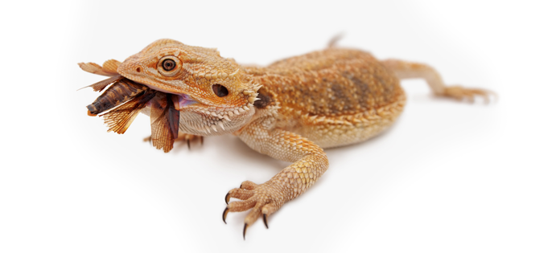

Best Times for Feeding Bearded Dragons
The first thing we would like to emphasize when it comes to feeding bearded dragons is that in order to properly digest their food their body needs to be warm. Regardless of age, from as soon as you acquire your dragon you want to get into the routine of making sure your first feeding of the day comes 2 hours after their lights first are turned on. And their last feeding of the day should come at least 2 hours before the lights are turned off for the evening.
Bearded dragons are nocturnal creatures so you want to make sure you are turning off their lights every night so that they can get on a regular sleep schedule and be able to sleep through the night. In order to provide heat, you can always use a ceramic light that emits heat but no light.
Secondly, given that you now know the earliest and latest time of the day for feeding bearded dragons, it is also important to establish a routine and habit as well. We recommend setting up regular meal times and using long handled tweezers or dedicated lightweight garden gloves to serve them their live feeder insects. Using gloves and/or tweezers helps to make dragons aware when you are feeding them verses handling them.
While it can seem time-consuming to hand feed flying/jumping insects we find that it makes it less stressful especially for babies. Crickets are noisy and jump everywhere and if you toss a bunch of them in the terrarium they can also bite or nip at the baby. Alternatively, you can dizzy your insects before feeding them. You do this by recycling an old container such as a cardboard tubular oatmeal box or a large zip lock baggie. Toss the live feeder insects in there with a sprinkle of calcium powder and give them a shake for a few seconds. Remember that the insects must be fed live so you don’t want to shake them too much. This helps slow them down once you put them in their tank.
Starter Meal Plan

The recommended diet for feeding bearded dragons primarily consists of fresh salads and live feeder insects sprinkled with some calcium and a multivitamin. You can also feed them fruit but we recommend this as a treat or for training purposes.
Fresh salads should be offered daily and consists of greens such as collards, dandelions or mustard greens as their staple vegetables (should be included in every salad). We recommend 2 greens for the base.
And then you can add texture or color with fresh chopped green beans, Konnayu (purple yams), red peppers or shaved butternut squash. This helps make their salads more appealing. Sometimes you can add a few worms as well if your dragon is stubborn at first.
10 Ways You Can Help Your Bearded Dragon Live Longer
A healthy bearded dragon that is well-cared for can have a lifespan of 10 years. And some captive bearded dragons have been reported to live up to 15 years!!
As exciting as it might be to have a bearded for more than a decade – the first challenge is often getting them to eat on the first day you take them home!
In the first weeks, even with the best of intentions, it is very difficult to learn and do everything that the breeder or reptile store has been naturally doing for years.
Yet, over time, you will begin to build a special bond with your dragon. And you recognize how amazing dragons are in their capacity to grow, shed and heal.
If you were to read through a list of bearded dragon illnesses, you might be surprised to learn that they share a lot of the same diseases as humans such as gout; periodontitis (gum disease); liver failure; and cancer.
Not all diseases such as Metabolic Bone Disease (MBD) are curable. But for many other ailments, they can usually be cured with proper treatment.
In our experience at Raising Bearded Dragons, we believe that preventive care is often the best remedy for maximizing your beardie’s life span.
Here’s some of our recommended husbandry practices to help your dragon live a full, healthy and happy life.
- Proper Hygiene: Your terrarium can become a breeding ground for parasites and infections. This happens when a dragon has eliminated in their tank. They might walk through their feces, sleep in it or accidentally ingest it. Thus we recommend spot cleaning terrariums immediately (or as soon as possible) after your dragon has eliminated in their tank. To spot clean, you throw away their feces, spray some disinfectant such as Zoo Med’s “Wipe Out”, an all-in-one disinfectant, cleaner and deodorizer and wipe clean. We recommend you do a deep cleaning of your terrarium at least one time per month.
- Journal Key Dates: Do you remember the last time your bearded dragon went into brumation or you changed their light bulbs? If not, this is why we recommend you get a small journal or notebook where you can record observations, writes notes and keep a food log. Use this notebook to keep track of things such as what your dragon is eating and how frequently; things you notice about their behavior; the date you changed their lighting; or the color of their urate (poop).
- An Alkaline Diet: Bearded dragons can develop diseases such as periodontitis (gum disease) and other health issues from not eating enough fresh and crunchy vegetables. Lack of vegetables causes their body to become too acidic and makes it difficult to fight off illnesses. The vegetables in their salads should be fresh, colorful and rotated out every few weeks to ensure they are getting a proper mix of vitamins and to prevent hypo or hyper vitaminosis.